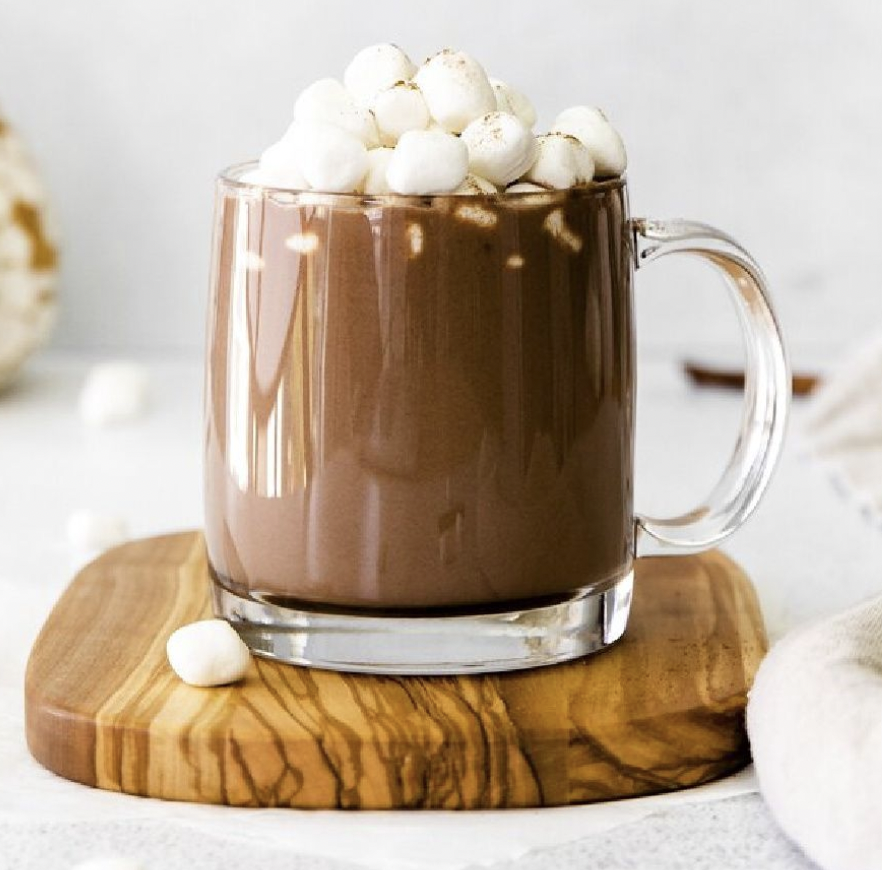

Back to Home
Pumpkin spice Hot Chocolate

Pumpkin spice hot chocolate is a simple spin on classic hot chocolate with the addition of warm flavors such as pumpkin spice and pure maple syrup.
Ingredients
- 1 1/2 cups whole milk
- 1 cup heavy cream
- 4 ounces semi-sweet chocolate (roughly chopped)
- 2 tablespoons pure maple syrup
- 1 teaspoon pumpkin pie spice
- 1 teaspoon vanilla extract
Instructions
- In a saucepan set over medium heat, bring the milk and cream to a simmer, stirring occasionally.
- Once simmering, add in the chocolate and continue stirring until fully melted.
- Remove from the heat and add in the maple syrup, pumpkin pie spice, and vanilla extract.
- Enjoy warm. Store any leftover hot chocolate in an airtight container in the fridge for up to two days.